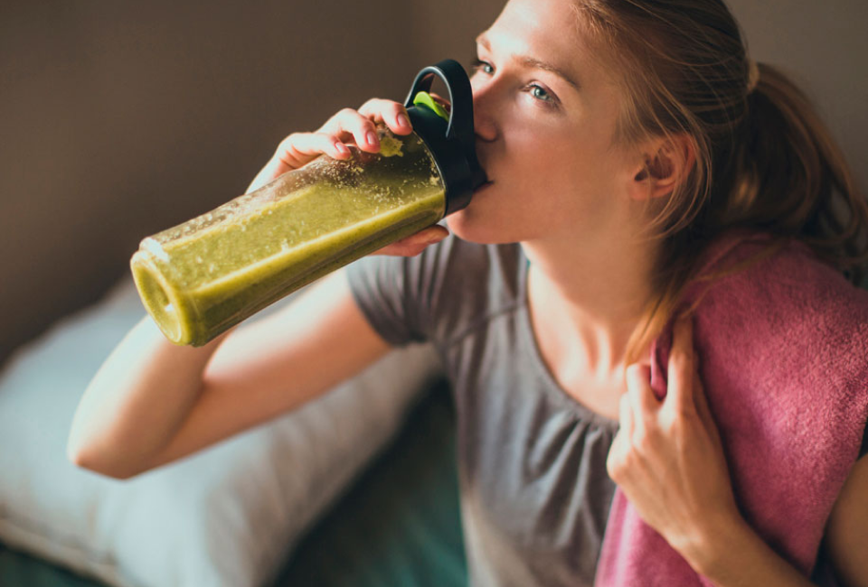
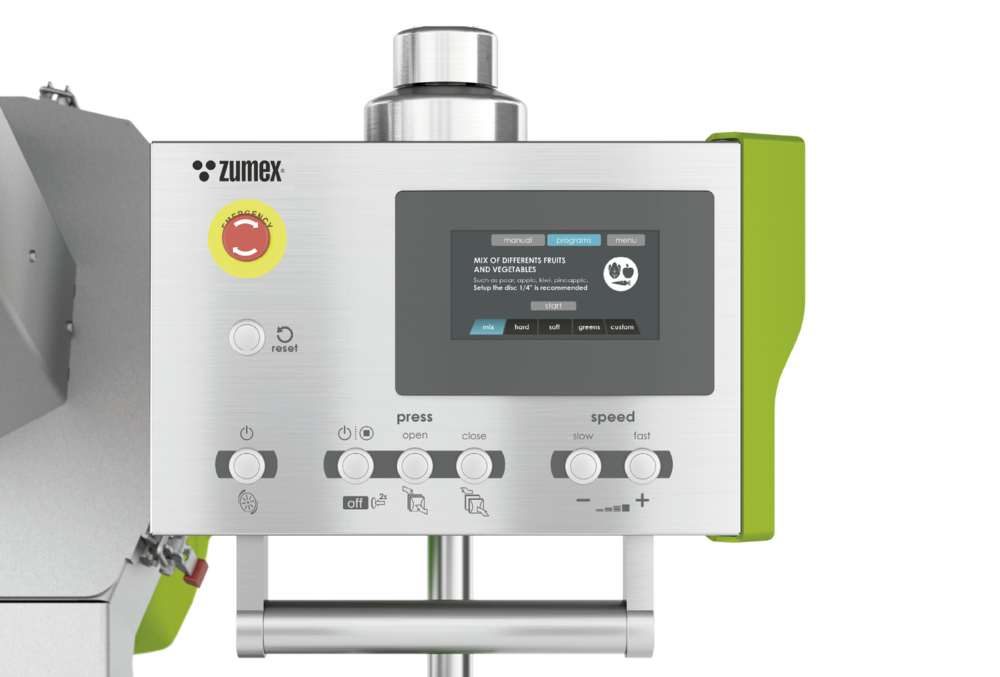

Cold Press
Mastery
Za studena. S plnou chutí.
Profesionální technologie lisování za studena pro výrobce šťáv a juice bary. Mastery zpracovává širokou paletu surovin a dává prostor vlastním recepturám.
Poptat tento produktCenu a dostupnost vám potvrdíme podle konfigurace.
Až 110 l/hDle suroviny
200 kg/hVýrobní kapacita
Cold PressTechnologie
Navržen pro váš provoz.
Mastery je lis pro výrobu šťáv za studena z ovoce a zeleniny. Hodí se pro samostatné výrobní projekty i rozšíření nabídky juice baru, pokud potřebujete mít pod kontrolou receptury a průběh lisování.
Nastavitelný tlak a rychlost umožňují přizpůsobit proces surovině. Kompaktní robustní konstrukce spojuje kroky potřebné pro cold-press výrobu; sestavu je vhodné navrhnout společně s přípravou surovin, skladováním a plněním.
Pro malosériovou profesionální výrobu.
Výsledný výkon závisí na receptuře a vstupní surovině.


VYBERTE SI PROVEDENÍ
Jedna řada. Vaše konfigurace.
Mastery
Kapacitu ověříme podle receptur a konkrétní konfigurace. U tohoto modelu je důležité posuzovat celý pracovní cyklus, ne pouze rychlost samotného lisování.
Poptat variantuFotografie jsou ilustrační pro danou řadu. Výbava a technické parametry se mohou lišit podle varianty.
PODROBNĚ A PŘEHLEDNĚ
Technické parametry.
- Technologie
- Cold Press — lisování za studena
- Suroviny
- Ovoce a zelenina
- Regulace
- Nastavitelný tlak a rychlost
- Konstrukce
- Kompaktní průmyslové provedení
- Elektrický příkon
- 2,25 kW
- Hmotnost
- 303 kg
Údaje výrobce pro uvedené provedení. Výkon závisí na surovině a konfiguraci. Zdroj: Zumex ↗
Co zvážit při výběru
Kapacitu ověříme podle receptur a konkrétní konfigurace. U tohoto modelu je důležité posuzovat celý pracovní cyklus, ne pouze rychlost samotného lisování.
Probrat vhodnou konfiguraci ↗VŠE PODSTATNÉ PO RUCE
Technické podklady.
Podrobnosti, dostupné příslušenství a materiály výrobce.